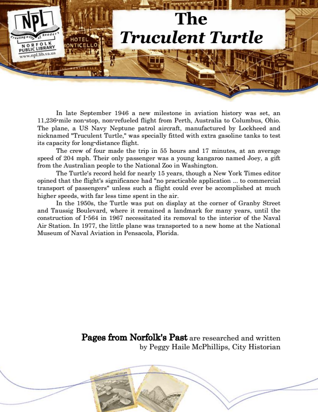

The Truculent Turtle
In late September 1946 a new milestone in aviation history was set, an 11,236-mile non-stop, non-refueled flight from Perth, Australia to Columbus, Ohio. The plane, a US Navy Neptune patrol aircraft, manufactured by Lockheed and nicknamed "Truculent Turtle," was specially fitted with extra gasoline tanks to test its capacity for long-distance flight.
The crew of four made the trip in 55 hours and 17 minutes, at an average speed of 204 mph. Their only passenger was a young kangaroo named Joey, a gift from the Australian people to the National Zoo in Washington.
The Turtle's record held for nearly 15 years, though a New York Times editor opined that the flight's significance had "no practicable application ... to commercial transport of passengers" unless such a flight could ever be accomplished at much higher speeds, with far less time spent in the air.
In the 1950s, the Turtle was put on display at the corner of Granby Street and Taussig Boulevard, where it remained a landmark for many years, until the construction of I-564 in 1967 necessitated its removal to the interior of the Naval Air Station. In 1977, the little plane was transported to a new home at the National Museum of Naval Aviation in Pensacola, Florida.
Pages from Norfolk's Past are researched and written by Peggy Haile McPhillips, City Historian